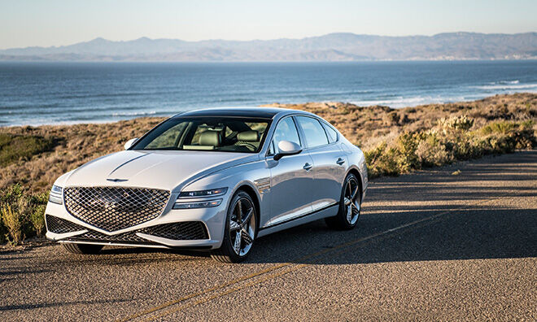
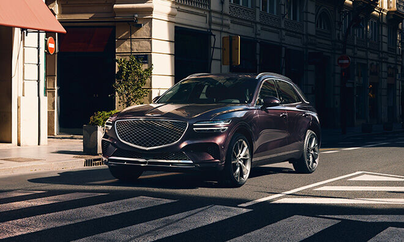

-

레드닷 어워드 2024
네오룬 콘셉트, 수송 디자인 분야 본상
‘수송 디자인(Cars and Motorcycles)’ 분야에서 초대형 전동화 SUV ‘네오룬 콘셉트(NEOLUN·이하 네오룬)’로 본상을 수상했습니다. 네오룬은 ‘단순함 속의 아름다움’이라는 메시지를 담은 독창적인 디자인으로 고급스러움과 혁신을 동시에 강조하며 제네시스만의 미래 지향적 가치를 보여줍니다.
-

카즈닷컴 어워드 2024
제네시스 Electrified GV70, 美 카즈닷컴
‘2024 최고의 고급차’ 수상GV70 전동화 모델은 우아한 외관과 잘 정돈된 실내, 인상적인 주행성능을 갖춘 전기차로 인정받으며 최고의 고급차 부문을 수상했습니다. 이로써 제네시스는 지난해 G90에 이어 2년 연속 최고의 고급차에 이름을 올렸습니다.
-

2023 굿디자인 어워드
세계 4대 디자인상 '굿디자인 어워드'
제네시스 최초의 컨버터블 콘셉트인 제네시스 엑스 컨버터블도 운송 부문 수상 명단에 올랐습니다. 제네시스 엑스 컨버터블은 지붕이 여닫히는 컨버터블의 특성을 바탕으로 ‘자연환경과 교감하는 운전 경험’을 품격 있고 세련된 디자인으로 표현한 콘셉트 모델입니다. 이번 수상으로 제네시스는 2015년 브랜드 출범 이후 9년 연속으로 ‘굿디자인 어워드’에서 수상하는 영예를 안았습니다.
-

카 디자인 어워드 2023
제네시스 X 컨버터블, '올해의 콘셉트카'로 선정
‘오토 앤드 디자인’에서 주최하는 ‘카 디자인 어워드 2023’에서 ‘올해의 콘셉트카’로 선정되며 디자인 우수성을 인정받았습니다.
-

레드닷 어워드 2023
G90, 수송 디자인 분야 본상
세계적인 디자인 상 '레드 닷 어워드'에서 '역동적인 우아함'이라는 제네시스 디자인 정체성이 반영된 품격있는 외관으로 본상을 받았습니다.
-

2023 모터트렌드 올해의 차®
제네시스 G90, 모터트렌드 올해의 차® 선정 (미국 사양 기준)
세계적으로 권위 있는 자동차 전문지 모터드렌드의 6가지 항목 평가에서 G90가 '2023년 올해의 차(미국 사양 기준)'에 선정되었습니다.
-

레드닷 어워드 2022
제네시스, ‘2022 레드 닷 어워드’에서 4개 부문 수상
제네시스가 독일 노르트하인 베스트팔린 디자인센터가 주관하는 ‘2022 레드 닷 어워드’에서 총 4개의 디자인상을 수상하였습니다.
-

제이디파워 2022
J.D. POWER 신차품질조사 프리미엄 브랜드 1위 달성
2017년 이후 6년 동안 꾸준히 프리미엄 브랜드 최상위권을 유지한 제네시스가 ‘2022년 신차품질조사’에서 1위를 달성했습니다.
-

2022 IIHS 톱 세이프티 픽 플러스
美 IIHS 충돌 평가서 최고 안전한 럭셔리 브랜드로 등극
미국 고속도로 안전보험협회(IIHS)가 발표한 충돌 평가에서 제네시스 전 차종이 ‘TSP+ 등급’을 획득했습니다.